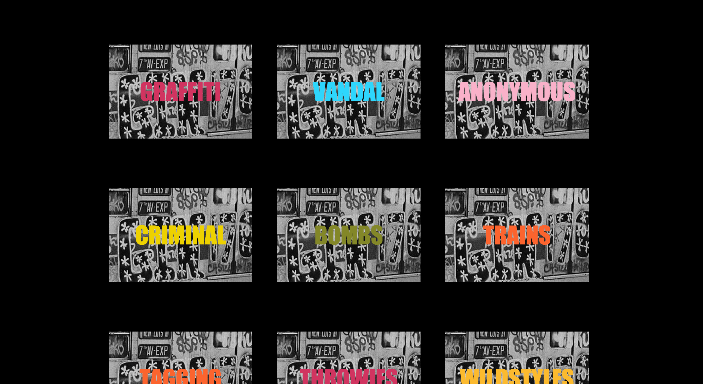
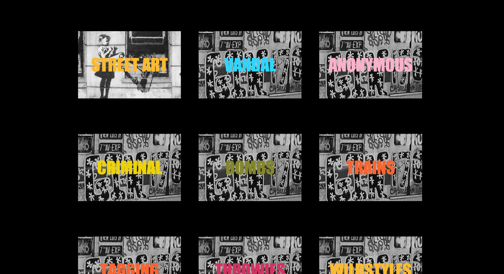

Varun Vig
Core Studio Interaction
The Box, an interactive assignment designed for Core Interaction Studio focuses on showing the different thoughts and beliefs between Graffiti and Street Art. When two forms or art are derived from the same roots but the way people react to the art forms are on two completely different spectrums, it opens a dialogue for what we really see as art. Being a Graffiti writer and seeing the two cultures stem from similar backgrounds, I directed my project on the contrast of two urban landscapes being New York City and London.
My process focuses on getting the user to hover over the set of boxes with the New York trains displaying single words affiliated with graffiti, and as they do the box rotates and switches to an image of a Bankst piece with single words affiliated with street art. The words affiliated with graffiti portray a negative mindset to the art form on the other hand the ones on street glorify the act, although both process wise are similar in nature.
I really enjoyed creating this piece, as overall I as an artist got to express what I felt having dabbled in both forms. A key note to the viewers, try and flip different words and read both art forms as a mixed story. Everyone has influences from different areas in life and as artist we like to show them in different ways. Every story is unique, go make your own with "The Box"